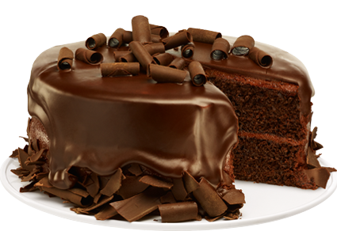
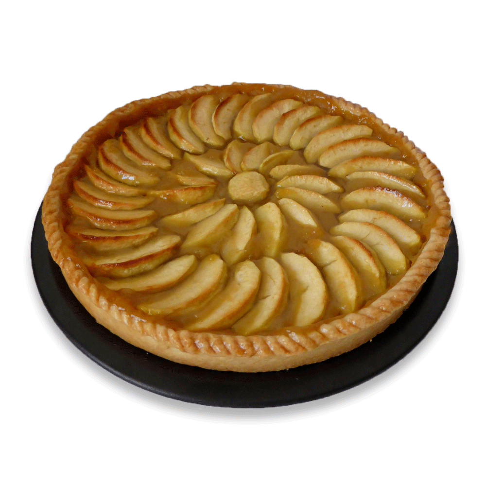

Recette de Cupcake
Recette de Cupcake
Préchauffer le four à 350 °F.
Dans un grand bol, tamiser la farine, la poudre à pâte et le sel.
Bien mélanger le tout.
Dans un second bol, battre le beurre en crème et ajouter le sucre,
les oeufs et la vanille. Bien mélanger.
Ajouter le mélange de farine et le lait. Bien mélanger quelques minutes.
Remplir des moules à muffins aux 3/4. Cuire environ 20 minutes.
Glaçage : mettre dans un bol tous les ingrédients pour le glaçage et
bien mélanger. Ajouter du sucre à glacer au besoin.
Recouvrir les cupcakes de glaçage lorsque ceux-ci sont froids.
Recette de Gâteau au chocolat
Préchauffer le four à 350 °F.
Beurrer deux moules à charnière de 9 pouces. Réserver.
Dans un bol, mélanger la farine, la poudre de cacao, le bicarbonate de soude,
la poudre à pâte et le sel. Réserver.
Dans un grand bol, verser les œufs, le sucre et l’extrait de vanille,
puis fouetter vigoureusement pendant environ 3 minutes, ou jusqu’à l’obtention
d’une texture bien mousseuse.
Incorporer la mayonnaise et l’eau, puis bien mélanger.
Ajouter graduellement les ingrédients secs, bien mélanger, puis incorporer les
pépites de chocolat.
Répartir le mélange dans les deux moules, puis enfourner pendant 30 minutes,
ou jusqu’à ce que les centres soient cuits.
Laisser refroidir complètement avant de démouler.
Pendant ce temps, mélanger tous les ingrédients « pour le glaçage » jusqu’à
l’obtention d’une texture lisse et onctueuse. Réserver.
Placer un premier étage de gâteau sur une assiette de service, puis tartiner de glaçage.
Ajouter l’autre gâteau sur le dessus, puis tartiner à nouveau. Décorer de sucre glace et
de fruits frais, puis servir.

Recette de Tarte aux pommes
Préchauffer le four à 450°F (220°C).
Dans une petite casserole, faire fondre le beurre. Incorporer la farine
pour obtenir une pâte assez épaisse. Ajouter l’eau, le sucre et la cassonade,
puis porter à ébullition. Ramener à feu doux et laisser mijoter.
Sur un plan de travail fariné, étaler la pâte et en recouvrir un moule à tarte
de 23 cm de diamètre.
Recouvrir de tranches de pommes en les rangeant bien pour une présentation
digne d’une pâtisserie.
Faire en sorte que chaque quartier de pomme chevauche légèrement le précédent.
Avec des bandes de pâte d’environ 1,5 cm de large, former des croisillons
sur les pommes.
Verser délicatement le mélange de sucre et de beurre par-dessus, en prenant garde
qu’il ne déborde pas.
Faire cuire pendant 15 minutes dans le four préchauffé.
Ramener la température du four à 350°F (180°C) et continuer à faire
cuire pendant 35 à 45 minutes,
jusqu’à ce que les pommes soient tendres. Servir avec de la crème glacée
à la vanille ou de la crème anglaise.
